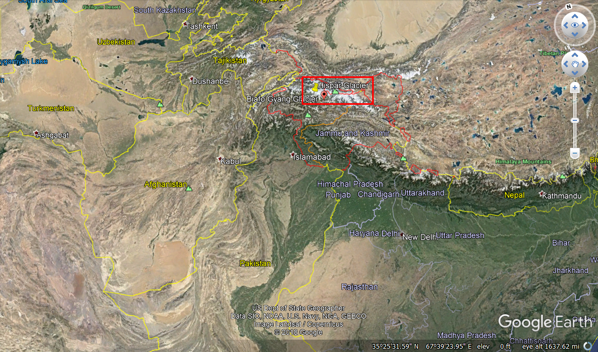
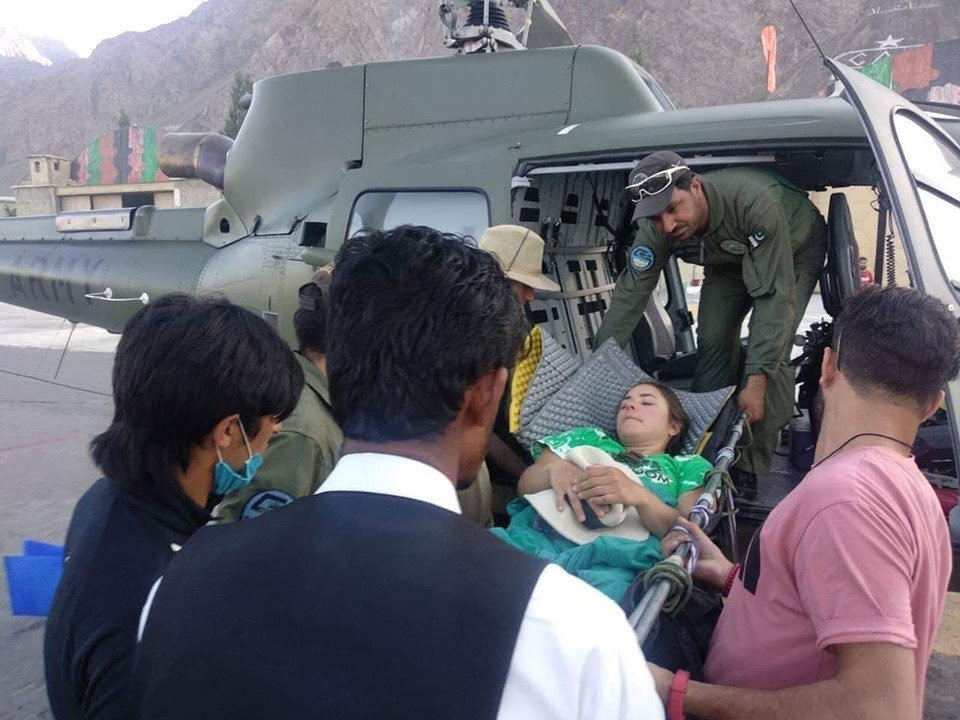

Pakistani authorities safely rescue Arizona based rock-climber Michelle Marco after she fell off from a Peak at Hispar Glacier.
On 23rd July, 2019 Pakistan Army Aviation Corp which has a mandate of search and rescue based operations in the Northern most part of the country where multiple mountaineers come each year from different parts of the world to try their luck in reaching the summit of some of the World’s highest peaks.
Hispar Glacier present at almost 17,000 ft above sea level.
Michelle Marco, an Arizona based mountaineer accompanied by fellow climber Patrick Light suffered an accident which caused her to halt the summit she was going to attempt.
Her facebook post.
Michelle’s facebook post which was made on 16th of July suggested she will start her trek from Askole, a region where internet connections are hard to find. On a rescue request made by her fellow mountaineer, Michelle was luckily rescued by the Pakistan Army team. and now she’s been given medical attention where her condition is said to be stable. The rescue attempt was made at a height of 15,000 ft above sea level.
Image: Michelle being lifted off the helicopter. Courtesy: Pakistan Defense Command, twitter.
The rescue attempt was made at a height of 15,000 ft above sea level, and now she’s been given medical attention where her condition is said to be stable.
Also Read: An Iranian drone was captured by Pakistan which violated the air-space. Here’s what we know so far.